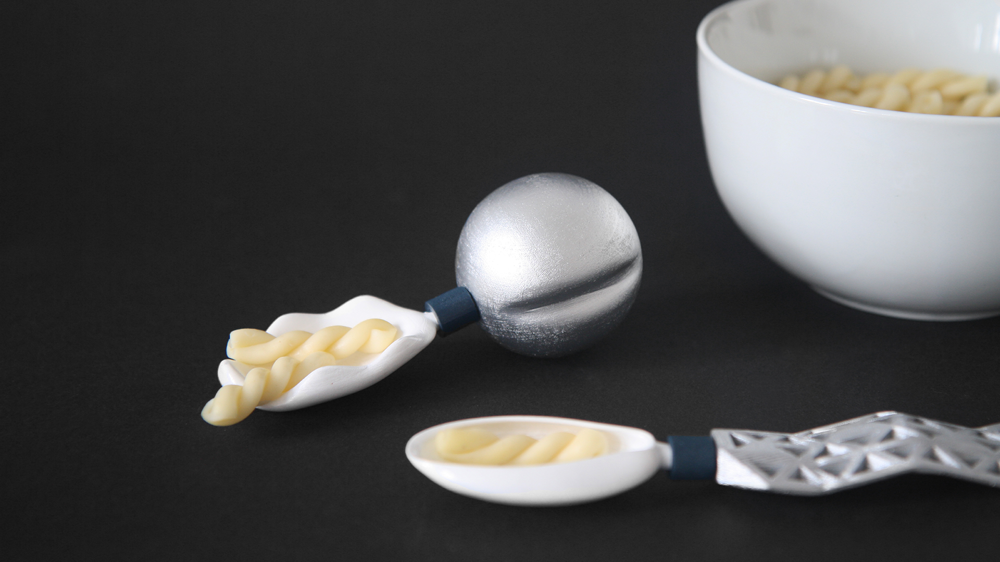
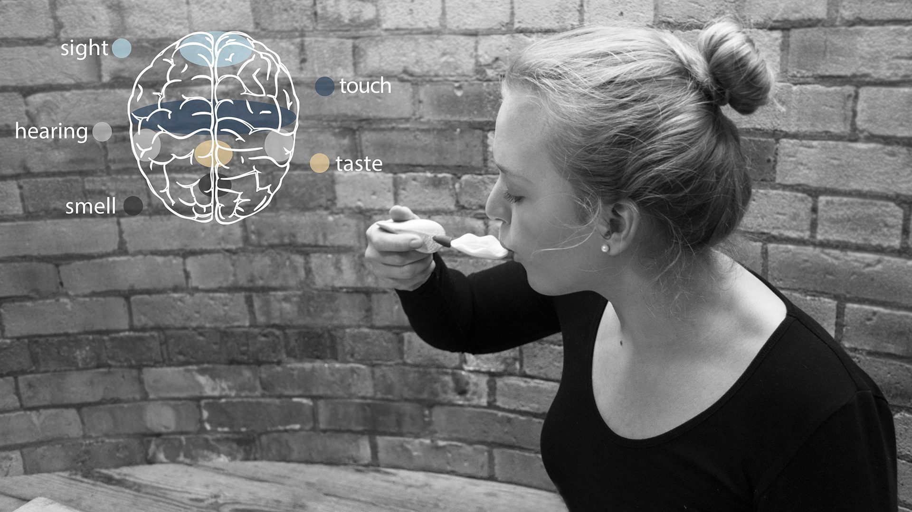
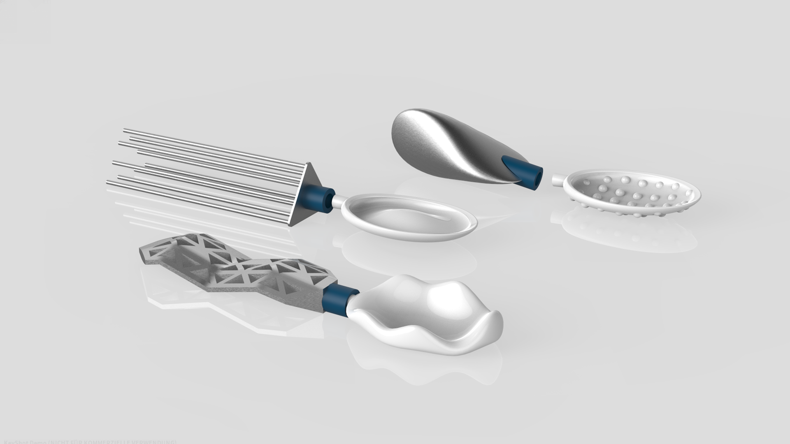
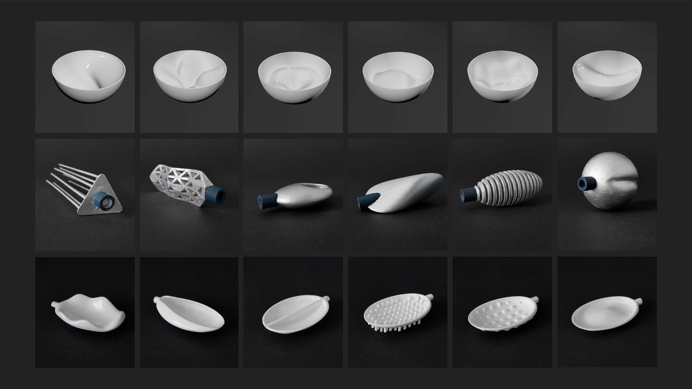

In Germany every 13th person over 65 suffers from dementia. In their everyday life people suffering from this desease need a certain routine in their lifes to feel secure. Always doing the same thing unfortunaltely leads to the reduction of cognitive abilities. In order to increase their cognitive abilities, people with dementia need to challenge their brains via variation. But doing something unfamiliar makes them feel insecure. variations^n combines routine and variety to train dementia sufferers brains without putting them in distress. variations^n makes use of the five senses such as sight, touch, hearing, taste and smell to train brains passivly. All those senses come together in the routine of having a meal. variations^n is a set of bowls together with handles and the heads of spoons. The different shapes of the bowls affect the users direction of motion while the shapes of the spoons send different expressions to the brain while touching with the hand or tongue. The two parts can be easily assembled and dissembled. By combining one of the heads of the spoons with one of the various handles and bowls, the user has 216 different possibilities on hand. The system of variety^n is expandable either by adding to the existing elements or creating an entirely new one. variations is a set of each six bowls, handles and heads of spoons for people with dementia. These three parts can be combined in 216 ways. Their design varies in order for the dementia patients brains to respond differently every time they eat. Thus their cognitive abilities are trained passivily. Because of its indipendent applicability the patient feels more secure. Routine provides a feeling of security for people suffering from dementia because they can act independently. Doing something unfamiliar makes them feel insecure but variety is needed in order to increase cognitive abilities. variations^n combines routine and variety to train dementia sufferers brains without putting them in distress. While eating we use all our senses. Especially in the hands, the mouth and the lips are many sensory cells. The shapes and haptics of the bowls, handles and heads of the spoons of variations^n activate the senses of the user and thus train the users brain passivly. By combining one of the heads of the spoons with one of the various handles and bowls, the user has 216 different possibilities on hand. Due to it's modular system variations^n is expandable, either by adding to the existing elements or creating an entirely new one.

variationsn – product design


